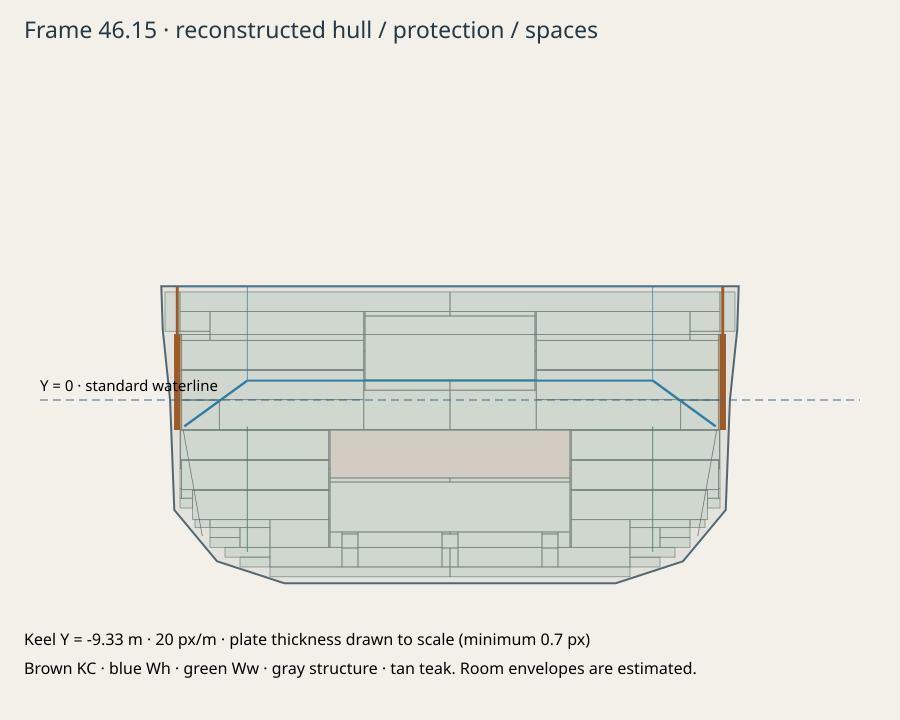
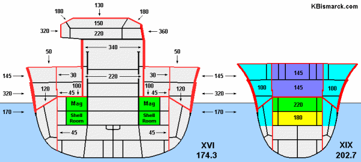
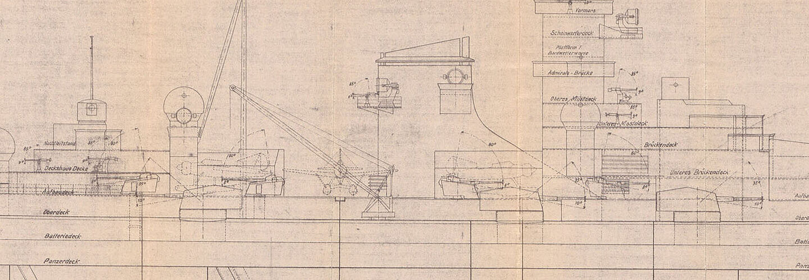
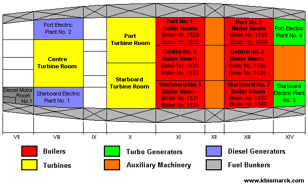

Bismarck · 24 May 1941
Independent reconstruction at a 9.33 m standard draft. Compare the exported ship with GameModels3D and historical drawings, using fixed cameras and a single scale registration.
Engineering targets passed · hull sections and internal envelopes remain reconstructed. Build bba69db7f1a6 · EU 15.7.0.0 reference · no historical accuracy certification.
Same orthographic camera. Reference: Single global similarity registration, 15 m/viewer unit for nominal 36 m beam. Source Y=0 retained as unknown game load datum. No length fit or component scaling. Blue/brown exported overlays are available below.
Actual authored GLBGameModels3D · comparison evidence
Download full resolution comparison sheet · Reference contact sheet · Capture manifest
Dimensions and datums
| Measurement | Exported | Target | Deviation | Build tolerance | Evidence |
|---|
| overall length | 250.500 m | 250.500 m | +0.000 m | ±0.03 m | documented
assessed uncertainty ±0.15 m |
|---|
| maximum beam | 36.000 m | 36.000 m | +0.000 m | ±0.03 m | documented
assessed uncertainty ±0.1 m |
|---|
| standard draft | 9.330 m | 9.330 m | -0.000 m | ±0.03 m | documented
assessed uncertainty ±0.1 m |
|---|
| waterline length | 241.550 m | 241.550 m | -0.000 m | ±0.12 m | documented
assessed uncertainty ±0.2 m |
|---|
| waterline beam | 36.000 m | 36.000 m | +0.000 m | ±0.1 m | documented
assessed uncertainty ±0.2 m |
|---|
| midship depth | 15.000 m | 15.000 m | +0.000 m | ±0.08 m | documented
assessed uncertainty ±0.15 m |
|---|
Measurements intersect actual exported hull triangles. The hull is watertight after welding: 16248 triangles, 0 degenerate triangles. All 191 authored room envelopes fit within the reconstructed hull. These checks cannot certify missing historical offsets.
Measurements and probes · Reviewed modeling specification · Editable blueprint · Historical raster registration
Landmark deviations
Runtime coordinates are X starboard, Y up, Z aft, in metres. Deviations check the exported landmarks against the reviewed specification; they do not measure agreement with GameModels3D. Evidence uncertainties are our assessment, not source-published error bars.
| Landmark | Exported X, Y, Z | Reviewed X, Y, Z | Largest axis deviation | Evidence and tolerance |
|---|
| anton axis | 0.00, 8.65, -70.05 | 0.00, 8.65, -70.05 | 0.0000 m | estimated · ±0.8 m · kb-plan-24may |
|---|
| bruno axis | 0.00, 12.45, -51.85 | 0.00, 12.45, -51.85 | 0.0000 m | estimated · ±0.8 m · kb-plan-24may |
|---|
| caesar axis | -0.00, 12.45, 58.15 | 0.00, 12.45, 58.15 | 0.0000 m | estimated · ±0.8 m · kb-plan-24may |
|---|
| dora axis | -0.00, 8.25, 76.35 | 0.00, 8.25, 76.35 | 0.0000 m | estimated · ±0.8 m · kb-plan-24may |
|---|
| funnel cap | 0.00, 25.00, 2.40 | 0.00, 25.00, 2.40 | 0.0000 m | plan-measured · ±1.5 m · kb-plan-24may |
|---|
| mainmast top | 0.00, 48.50, 22.50 | 0.00, 48.50, 22.50 | 0.0000 m | estimated · ±2 m · kb-plan-24may |
|---|
| fore director | 0.00, 32.00, -13.40 | 0.00, 32.00, -13.40 | 0.0000 m | plan-measured · ±0.8 m · kb-plan-24may |
|---|
| conning director | 0.00, 20.60, -27.60 | 0.00, 20.60, -27.60 | 0.0000 m | plan-measured · ±0.8 m · kb-plan-24may |
|---|
| aft director | -0.00, 17.50, 37.80 | 0.00, 17.50, 37.80 | 0.0000 m | plan-measured · ±0.8 m · kb-plan-24may |
|---|
Protection and internal spaces

Authored section · physical layer separation and thickness
Historical technical reconstruction · unscaled schematic, no forced overlay · Source discussionCPU probes cross separate physical plates once. Teak backing is visible but contributes no invented steel-equivalent resistance. Slopes change incidence; gunhouse plates train with their mount. AP performance and flood capacities remain game approximations.
broadside: Port Main Belt 2 (320 mm KC) → Port Teak Backing 2 (50 mm teak) → Port Belt Support 2 (20 mm steel) → Port Turtleback 2 (110 mm Wh)
plunging: Upper Deck 2 (50 mm Wh) → Battery Deck 2 (12 mm steel) → Armor Deck 2 (80 mm Wh)
underwater: Port Lower Plating 2 (20 mm steel) → Port Torpedo Bulkhead 2 (45 mm Ww)
All fixed views and component sheets
Evidence and unresolved differences
Body-plan offsets and exact bridge/gunhouse dimensions remain estimates. The fourth pass corrects secondary roof profiles, separates the navigation/conning bridge and fits transverse armor within the hull. The reference game retains its own proportions and unknown load; export checks do not certify historical accuracy.

BArch RM 25/231, image 0004 · unscaled excerpt; fit revision unknown
Machinery sequence · approximate envelopes follow sections VIII, X, XI and XIIIOriginal dated plan image, with credit · Full source register
Source records and access limitations
- kb-dimensions — Technical characteristics, Dimensions table and footnote 2
verified online; retained historical/genedata.html. Waterplane area/coefficient arithmetic and load definitions are not a hull offset table. Not a builder drawing.
- nhhc-1942 — The Sinking of the Bismarck, Combat Narratives, 1942; opening paragraph
verified online. 797 ft length is ambiguous and differs from overall length. Do not substitute it for the documented overall length or average it with other numbers.
- kb-plan-24may — Manuel P. González López, Bismarck line drawings 24 May 1941, bsdraw24m.png
original raster retained, including credit; crops and registration separately indexed. Reconstruction, not an as-built plan. Linework and pixel measurements are not survey precision.
- barch-profile — BArch RM 25/231, image 0004; supplied profile excerpt
original supplied excerpt retained as historical/bundesarchiv-rm25-231-0004.jpg. Crop cuts off hull endpoints/title block; qualitative only, no forced metric overlay.
- rmg-body — National Maritime Museum NPO3614
catalogue verified; no downloadable scan exposed. No offsets or lines extracted. Hull sections remain reconstructed until the full drawing can be reviewed.
- rmg-platform — Platform deck plan, NPA0920
catalogue verified; full scan not acquired. Not used to assert exact compartment walls.
- shiparchive-lines — Bismarck 1941 lines plan description
provenance claim verified; plans not acquired. Not an input to numeric station reconstruction.
- kb-protection — Protection sections; proteccion6.gif, proteccion7.gif, bs-armor.jpg, 380mmp.gif, 150mmp.gif
page and original figures retained. Plate boundaries are reconstructed. Material names are descriptive; no empirical material penetration equivalence is claimed. Wood adds no steel penetration budget.
- kb-propulsion — Boiler/turbine arrangement and propulsion2.gif; July 1940 drydock photo023.jpg
verified and retained. Room frame boundaries and box dimensions are estimated from arrangement proportions; explicit ±3 m longitudinal uncertainty.
- kb-armament — Main artillery, turret frames and armament inventory
verified and retained. Frame-to-overall-midpoint offset and gunhouse dimensions need original drawings.
- admiralty-interrogation — C.B. 4051 (24), interrogation of Bismarck survivors, VII (2–3), pp. 27–30; Plate 1 listed
text reviewed through web reader; origin download returned HTTP 465. Report itself warns of limited survivor knowledge; conflicting armor recollections are not preferred over documented technical reconstructions.
- gm-pgsb708 — WoWS Bismarck '41, visual scheme and format-4 model endpoint
25 neutral captures in gamemodels3d/; hashed acquisition and capture manifest. Only raster outputs leave isolated reference stage. One empty propeller component. No source mesh, UV, texture, section or attachment transform is an authored geometry input.
- original-structure — Original structural collision and nominal plating specification
blueprint surfaces shared by simulation and visual recipe. 20 mm hull and 8 mm superstructure plating are not a verified historical schedule. Small fittings, AA and masts remain visual details.
Historical drawing © Manuel P. González López / KBismarck.com. Other archival and photograph credits remain in the source register. GameModels3D / Wargaming reference renders retained for comparison. All production geometry and materials independently authored. Reference art is not a game texture.